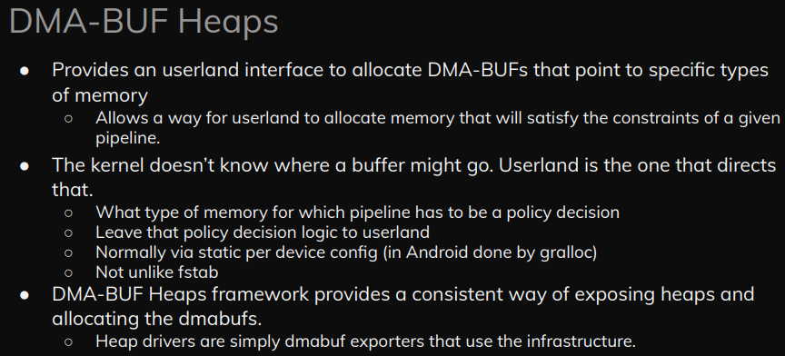
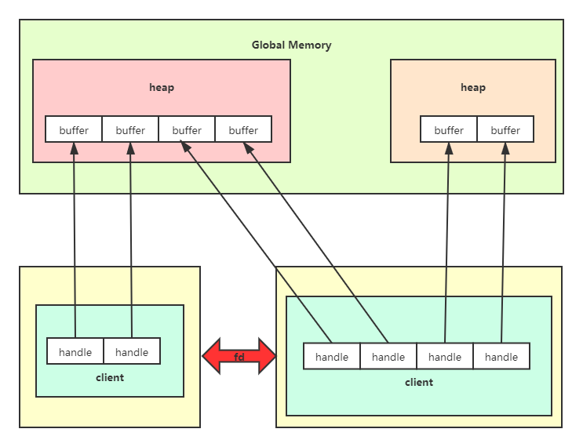
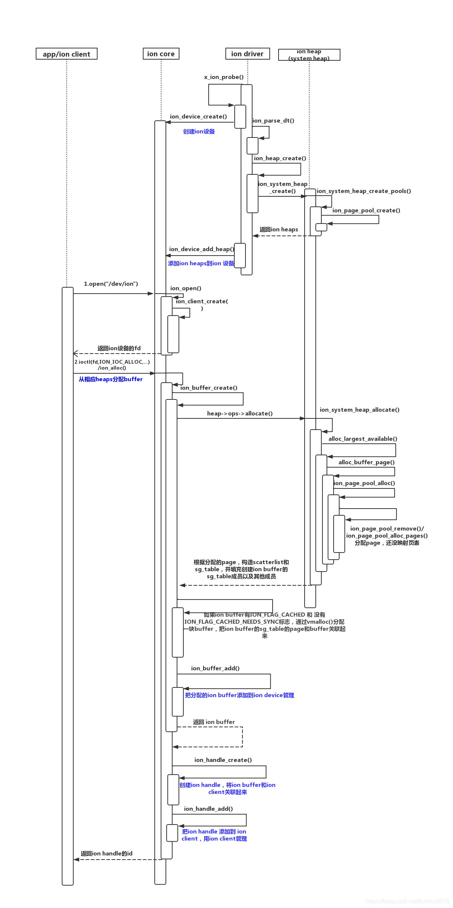

ION内存管理器¶
- kernel版本：4.14
- 源码位置：<include/linux/ion.h>，<drivers/staging/android/ion>
ION内存分配器已经由DMA heap取代

相关资料：
ION通用内存管理器是由谷歌开发的一个用于管理内存的子系统，通过在硬件设备和用户空间之间分配和共享内存，实现设备之间内存的零拷贝。它可以提供驱动之间、用户进程之间、内核空间和用户空间之间的共享内存。
在SoC中，许多硬件设备都具有访问DMA的能力，但是其访问机制却各不相同，不同设备申请的内存彼此之间互不相通，这就造成了内存管理上的混乱。ION提供了一种通用的内存分配方法，解决了不同设备之间内存管理碎片化的问题。
ION整体架构图如下图所示：

在用户层面，每个进程对应一个client，一个client下有多个handle，与内核层面的buffer一一对应。内核根据heap type管理不同的heap。不同的用户进程通过share_fd实现共享内存。
struct ion_heap结构体就表示一个heap，其中支持的heap type有：
enum ion_heap_type {
ION_HEAP_TYPE_SYSTEM,
ION_HEAP_TYPE_SYSTEM_CONTIG,
ION_HEAP_TYPE_CARVEOUT,
ION_HEAP_TYPE_CHUNK,
ION_HEAP_TYPE_DMA,
ION_HEAP_TYPE_CUSTOM,
ION_HEAP_TYPE_CMA_RESERVED,
};
- ION_HEAP_TYPE_SYSTEM：通过
vmalloc()函数分配的内存 - ION_HEAP_TYPE_SYSTEM_CONTIG：通过
kmalloc()函数分配的内存 - ION_HEAP_TYPE_CARVEOUT：启动时预留的内存
- ION_HEAP_TYPE_DMA：给DMA使用的内存
- ION_HEAP_TYPE_CMA_RESERVED：启动时预留给CMA的内存
struct ion_heap_ops实现对heap的操作：
struct ion_heap_ops {
int (*allocate)(struct ion_heap *heap,
struct ion_buffer *buffer, unsigned long len,
unsigned long align, unsigned long flags);
void (*free)(struct ion_buffer *buffer);
int (*phys)(struct ion_heap *heap, struct ion_buffer *buffer,
phys_addr_t *addr, size_t *len);
struct sg_table * (*map_dma)(struct ion_heap *heap,
struct ion_buffer *buffer);
void (*unmap_dma)(struct ion_heap *heap, struct ion_buffer *buffer);
void * (*map_kernel)(struct ion_heap *heap, struct ion_buffer *buffer);
void (*unmap_kernel)(struct ion_heap *heap, struct ion_buffer *buffer);
int (*map_user)(struct ion_heap *mapper, struct ion_buffer *buffer,
struct vm_area_struct *vma);
int (*shrink)(struct ion_heap *heap, gfp_t gfp_mask, int nr_to_scan);
};
allocate：从buffer中分配内存
phys：从物理地址连续的buffer中获取其物理地址
map_dma：将buffer映射到DMA地址空间
map_kernel：将buffer映射到内核地址空间
map_user：将buffer映射到用户空间
shrink：当内存紧张时，从heap中拆分buffer
内核数据结构¶
用户层访问ION必须通过/dev/ion，内核抽象出struct ion_device结构体用来管理ION设备：
struct ion_device {
struct miscdevice dev;
struct rb_root buffers;
struct mutex buffer_lock;
struct rw_semaphore lock;
struct plist_head heaps;
long (*custom_ioctl)(struct ion_client *client, unsigned int cmd,
unsigned long arg);
struct rb_root clients;
struct dentry *debug_root;
struct dentry *heaps_debug_root;
struct dentry *clients_debug_root;
struct rb_root share_buffers;
struct mutex share_lock;
struct idr idr;
struct rb_root share_pool_buffers;
struct dentry *ion_buf_debug_file;
};
struct ion_client表示用户空间创建的实例，每个进程只对应一个ion_client：
struct ion_client {
struct rb_node node;
struct ion_device *dev;
struct rb_root handles;
struct idr idr;
struct mutex lock;
const char *name;
char *display_name;
int display_serial;
struct task_struct *task;
pid_t pid;
struct dentry *debug_root;
wait_queue_head_t wq;
int wq_cnt;
struct kfifo fifo;
spinlock_t fifo_lock;
};
当用户使用open()打开/dev/ion时，最终调用的是ion_open()函数：
static const struct file_operations ion_fops = {
.owner = THIS_MODULE,
.open = ion_open,
.release = ion_release,
.unlocked_ioctl = ion_ioctl,
#ifdef CONFIG_COMPAT
.compat_ioctl = ion_ioctl,
#endif
.mmap = _ion_mmap,
};
该函数又调用ion_client_create()创建client，并建立与ion_device的联系：
static int ion_open(struct inode *inode, struct file *file)
{
struct miscdevice *miscdev = file->private_data;
struct ion_device *dev = container_of(miscdev, struct ion_device, dev);
struct ion_client *client;
char debug_name[64];
pr_debug("%s: %d\n", __func__, __LINE__);
snprintf(debug_name, 64, "%u", task_pid_nr(current->group_leader));
client = ion_client_create(dev, debug_name);
if (IS_ERR(client))
return PTR_ERR(client);
file->private_data = client;
(void)hb_expand_files(current->files, rlimit(RLIMIT_NOFILE)-1);
return 0;
}
ion_buffer在用户空间的对应形式就是struct ion_handle：
struct ion_handle {
struct kref ref;
struct ion_client *client;
struct ion_buffer *buffer;
struct rb_node node;
unsigned int kmap_cnt;
int id;
int share_id;
int import_cnt;
struct ion_share_handle * sh_hd;
int32_t import_consume_cnt;
};
struct ion_heap表示ION内存池：
struct ion_heap {
struct plist_node node;
struct ion_device *dev;
enum ion_heap_type type;
struct ion_heap_ops *ops;
unsigned long flags;
unsigned int id;
const char *name;
struct shrinker shrinker;
struct list_head free_list;
size_t free_list_size;
spinlock_t free_lock;
wait_queue_head_t waitqueue;
struct task_struct *task;
int (*debug_show)(struct ion_heap *heap, struct seq_file *, void *);
};
struct ion_buffer表示heap中的内存块：
struct ion_buffer {
struct kref ref;
union {
struct rb_node node;
struct list_head list;
};
struct ion_device *dev;
struct ion_heap *heap;
unsigned long flags;
unsigned long private_flags;
size_t size;
union {
void *priv_virt;
phys_addr_t priv_phys;
};
struct mutex lock;
int kmap_cnt;
void *vaddr;
int dmap_cnt;
struct sg_table *sg_table;
struct page **pages;
struct list_head vmas;
/* used to track orphaned buffers */
int handle_count;
char task_comm[TASK_COMM_LEN];
pid_t pid;
};
scatterlist¶
在继续深入之前，我们有必要了解下scatterlist——散列表，它用于组织分散的内存。
我们知道，CPU、DMA都有自己的访问内存的方式：
- CPU以MMU虚拟地址的方式
- DMA以直接物理地址的方式
于是，当内存要在这二者之间共享时，存在一个根本矛盾：在CPU的视角，由于有MMU机制，它根本不关心物理地址是否连续，只要虚拟地址连续即可。但是DMA没有MMU机制，其申请的内存必须是连续的，尤其是在传输图像、视频时，更是需要一大块连续的内存地址。
为了解决这个根本矛盾，scatterlist诞生了，它用来描述这一个个不连续的物理内存块：
struct scatterlist {
unsigned long page_link;
unsigned int offset;
unsigned int length;
dma_addr_t dma_address;
#ifdef CONFIG_NEED_SG_DMA_LENGTH
unsigned int dma_length;
#endif
};
page_link：指示该内存块所在的页面
offset：该内存块在页面中的偏移
length：该内存块的长度
dma_address：该内存块的起始地址
dma_length：相应的长度信息
struct sg_table¶
在实际场景中，单个scatterlist是无法使用的，我们需要多个scatterlist组成一个数组，以表示在物理上不连续的虚拟地址空间：
struct sg_table {
struct scatterlist *sgl; /* the list */
unsigned int nents; /* number of mapped entries */
unsigned int orig_nents; /* original size of list */
};
sgl：内存块数组的首地址
nents：有效的内存块个数
orig_nents：内存块数组的size
sg_table中到底有多少个有效内存块？其实是由struct scatterlist中的page_link字段决定的。如果它的 bit0 为1，表示它不是一个有效的内存块，而是指向另一个scatterlist数组。如果 bit1 为1，表示它是scatterlist数组中最后一个有效的内存块。
分配与释放内存¶
前面提到，ION对于管理的内存主要分成了四个区：
- 不连续内存
- 连续内存
- 保留区内存
- CMA内存
用户层操作ION时统一通过ion_ioctl()接口，通过传入flags=ION_IOC_ALLOC，再调用ion_alloc()函数，它主要做了以下事情：
- 根据优先级，从某个heap开始，根据用户传入的heap_mask，查看是否有匹配的内存可以分配，遍历系统中所有的heap，直到找到可以分配的内存为止。
- 分配内存的逻辑在
ion_buffer_create()函数中。 - 核心语句
heap->ops->allocate(heap, buffer, len, align, flags)——根据不同的heap调用对应的分配函数：struct ion_heap_ops中的allocate()回调函数。
这里重点讲一下system_heap的分配与释放，其他类型的heap留给读者自己去研究。
不连续内存¶
源码位于<drivers/staging/android/ion/ion_system_heap.c>
system_heap管理着三种类型的内存块：
static const unsigned int orders[] = {8, 4, 0};
这里的8、4、0代表的是页的数量，一页为4KB：
$ cat /sys/kernel/debug/ion/heaps/system
client pid size
----------------------------------------------------
----------------------------------------------------
allocations (info is from last known client):
----------------------------------------------------
total orphaned 0
total 0
deferred free 0
----------------------------------------------------
0 order 8 highmem pages in pool = 0 total
0 order 8 lowmem pages in pool = 0 total
0 order 4 highmem pages in pool = 0 total
0 order 4 lowmem pages in pool = 0 total
0 order 0 highmem pages in pool = 0 total
0 order 0 lowmem pages in pool = 0 total
-
分配：
static int ion_system_heap_allocate(struct ion_heap *heap, struct ion_buffer *buffer, unsigned long size, unsigned long flags) { struct ion_system_heap *sys_heap = container_of(heap, struct ion_system_heap, heap); struct sg_table *table; struct scatterlist *sg; struct list_head pages; struct page *page, *tmp_page; int i = 0; unsigned long size_remaining = PAGE_ALIGN(size); unsigned int max_order = orders[0]; if (size / PAGE_SIZE > totalram_pages() / 2) return -ENOMEM; INIT_LIST_HEAD(&pages); while (size_remaining > 0) { //核心分配函数 page = alloc_largest_available(sys_heap, buffer, size_remaining, max_order); if (!page) goto free_pages; list_add_tail(&page->lru, &pages); size_remaining -= page_size(page); max_order = compound_order(page); i++; } //使用sg_table来管理分散的内存块 table = kmalloc(sizeof(*table), GFP_KERNEL); if (!table) goto free_pages; if (sg_alloc_table(table, i, GFP_KERNEL)) goto free_table; sg = table->sgl; //将内存块与scatterlist关联，并从buddy中删除 list_for_each_entry_safe(page, tmp_page, &pages, lru) { sg_set_page(sg, page, page_size(page), 0); sg = sg_next(sg); list_del(&page->lru); } buffer->sg_table = table; return 0; free_table: kfree(table); free_pages: list_for_each_entry_safe(page, tmp_page, &pages, lru) free_buffer_page(sys_heap, buffer, page); return -ENOMEM; }
alloc_largest_available()函数：
static struct page *alloc_largest_available(struct ion_system_heap *heap,
struct ion_buffer *buffer,
unsigned long size,
unsigned int max_order)
{
struct page *page;
int i;
//每次找到小于分配size的最大order
for (i = 0; i < num_orders; i++) {
if (size < order_to_size(orders[i]))
continue;
if (max_order < orders[i])
continue;
//先从pool中分配，如果没有就从buddy中分配
page = alloc_buffer_page(heap, buffer, orders[i]);
if (!page)
continue;
return page;
}
return NULL;
}
alloc_buffer_page()函数：
static struct page *alloc_buffer_page(struct ion_system_heap *heap,
struct ion_buffer *buffer,
unsigned long order)
{
bool cached = ion_buffer_cached(buffer);
struct ion_page_pool *pool = heap->pools[order_to_index(order)];
struct page *page;
//system_heap有cached和uncached两种类型，对应不同的pool
if (!cached) {
page = ion_page_pool_alloc(pool);
} else {
gfp_t gfp_flags = low_order_gfp_flags;
if (order > 4)
gfp_flags = high_order_gfp_flags;
page = alloc_pages(gfp_flags | __GFP_COMP, order);
if (!page)
return NULL;
ion_pages_sync_for_device(NULL, page, PAGE_SIZE << order,
DMA_BIDIRECTIONAL);
}
return page;
}
ion_page_pool_alloc()函数：
struct page *ion_page_pool_alloc(struct ion_page_pool *pool)
{
struct page *page = NULL;
BUG_ON(!pool);
mutex_lock(&pool->mutex);
//先从high中分配，再从low中分配
if (pool->high_count)
page = ion_page_pool_remove(pool, true);
else if (pool->low_count)
page = ion_page_pool_remove(pool, false);
mutex_unlock(&pool->mutex);
//如果分配失败，则从buddy中分配
if (!page)
page = ion_page_pool_alloc_pages(pool);
return page;
}
ion_page_pool_alloc_pages()函数：
static void *ion_page_pool_alloc_pages(struct ion_page_pool *pool)
{
struct page *page = alloc_pages(pool->gfp_mask, pool->order);
if (!page)
return NULL;
return page;
}
至此，system_heap的分配流程结束。
-
释放：
static void ion_system_heap_free(struct ion_buffer *buffer) { struct ion_system_heap *sys_heap = container_of(buffer->heap, struct ion_system_heap, heap); struct sg_table *table = buffer->sg_table; struct scatterlist *sg; int i; /* zero the buffer before goto page pool */ if (!(buffer->private_flags & ION_PRIV_FLAG_SHRINKER_FREE)) ion_heap_buffer_zero(buffer); for_each_sgtable_sg(table, sg, i) //核心释放内存的函数 free_buffer_page(sys_heap, buffer, sg_page(sg)); sg_free_table(table); kfree(table); }
free_buffer_page()函数：
static void free_buffer_page(struct ion_system_heap *heap,
struct ion_buffer *buffer, struct page *page)
{
unsigned int order = compound_order(page);
bool cached = ion_buffer_cached(buffer);
if (!cached && !(buffer->private_flags & ION_PRIV_FLAG_SHRINKER_FREE)) {
struct ion_page_pool *pool = heap->pools[order_to_index(order)];
//返还给pool
ion_page_pool_free(pool, page);
} else {
//返回给buddy
__free_pages(page, order);
}
}
连续内存¶
源码位于<drivers/staging/android/ion/ion_system_heap.c>
-
分配：
static int ion_system_contig_heap_allocate(struct ion_heap *heap, struct ion_buffer *buffer, unsigned long len, unsigned long flags) { int order = get_order(len); struct page *page; struct sg_table *table; unsigned long i; int ret; //直接从buddy中分配内存页 //分配的内存页是可能比实际请求的大的，比如申请len是3个page大小，那么order就为2，实际申请了4个page page = alloc_pages(low_order_gfp_flags, order); if (!page) return -ENOMEM; //将申请到的连续内存页分割成一页页 split_page(page, order); //由于在分配时可能多分配，因此需要将多余的page释放回去。比如申请3个page，实际分配了4个 len = PAGE_ALIGN(len); for (i = len >> PAGE_SHIFT; i < (1 << order); i++) __free_page(page + i); //接着申请sg_table table = kmalloc(sizeof(*table), GFP_KERNEL); if (!table) { ret = -ENOMEM; goto free_pages; } //由于是连续的内存，因此只需要申请一个scatterlist ret = sg_alloc_table(table, 1, GFP_KERNEL); if (ret) goto free_table; //将连续内存首页地址存到sg_table中 sg_set_page(table->sgl, page, len, 0); buffer->sg_table = table; return 0; free_table: kfree(table); free_pages: for (i = 0; i < len >> PAGE_SHIFT; i++) __free_page(page + i); return ret; } -
释放：
static void ion_system_contig_heap_free(struct ion_buffer *buffer) { struct sg_table *table = buffer->sg_table; struct page *page = sg_page(table->sgl); unsigned long pages = PAGE_ALIGN(buffer->size) >> PAGE_SHIFT; unsigned long i; //释放时就直接将内存页归还给buddy，__free_page是buddy system的接口 for (i = 0; i < pages; i++) __free_page(page + i); sg_free_table(table); kfree(table); }
保留区内存¶
-
分配：
static int ion_carveout_heap_allocate(struct ion_heap *heap, struct ion_buffer *buffer, unsigned long size, unsigned long align, unsigned long flags) { struct sg_table *table; phys_addr_t paddr; int ret; if (align > PAGE_SIZE) { pr_err("%s: align should <= page size\n", __func__); return -EINVAL; } table = kmalloc(sizeof(struct sg_table), GFP_KERNEL); if (!table) return -ENOMEM; ret = sg_alloc_table(table, 1, GFP_KERNEL); if (ret) { pr_err("%s: sg alloc table failed\n", __func__); goto err_free; } paddr = ion_carveout_allocate(heap, size, align); if (paddr == ION_CARVEOUT_ALLOCATE_FAIL) { ret = -ENOMEM; goto err_free_table; } sg_set_page(table->sgl, pfn_to_page(PFN_DOWN(paddr)), size, 0); buffer->priv_virt = table; if (buffer->flags & ION_FLAG_INITIALIZED) { ion_heap_buffer_zero_ex(table, buffer->flags); } return 0; err_free_table: sg_free_table(table); err_free: kfree(table); return ret; } -
释放：
static void ion_carveout_heap_free(struct ion_buffer *buffer) { struct ion_heap *heap = buffer->heap; struct sg_table *table = buffer->priv_virt; struct page *page = sg_page(table->sgl); phys_addr_t paddr = PFN_PHYS(page_to_pfn(page)); ion_heap_buffer_zero(buffer); if (ion_buffer_cached(buffer)) { dma_sync_sg_for_device(NULL, table->sgl, table->nents, DMA_BIDIRECTIONAL); __flush_dcache_area(phys_to_virt(paddr), buffer->size); } ion_carveout_free(heap, paddr, buffer->size); sg_free_table(table); kfree(table); }
CMA内存¶
源码位于<drivers/staging/android/ion/ion_cma_heap.c>
-
分配：
static int ion_cma_allocate(struct ion_heap *heap, struct ion_buffer *buffer, unsigned long len, unsigned long flags) { struct ion_cma_heap *cma_heap = to_cma_heap(heap); struct sg_table *table; struct page *pages; unsigned long size = PAGE_ALIGN(len); unsigned long nr_pages = size >> PAGE_SHIFT; unsigned long align = get_order(size); int ret; if (align > CONFIG_CMA_ALIGNMENT) align = CONFIG_CMA_ALIGNMENT; pages = cma_alloc(cma_heap->cma, nr_pages, align, false); if (!pages) return -ENOMEM; if (PageHighMem(pages)) { unsigned long nr_clear_pages = nr_pages; struct page *page = pages; while (nr_clear_pages > 0) { void *vaddr = kmap_atomic(page); memset(vaddr, 0, PAGE_SIZE); kunmap_atomic(vaddr); page++; nr_clear_pages--; } } else { memset(page_address(pages), 0, size); } table = kmalloc(sizeof(*table), GFP_KERNEL); if (!table) goto err; ret = sg_alloc_table(table, 1, GFP_KERNEL); if (ret) goto free_mem; sg_set_page(table->sgl, pages, size, 0); buffer->priv_virt = pages; buffer->sg_table = table; return 0; free_mem: kfree(table); err: cma_release(cma_heap->cma, pages, nr_pages); return -ENOMEM; } -
释放：
static void ion_cma_free(struct ion_buffer *buffer) { struct ion_cma_heap *cma_heap = to_cma_heap(buffer->heap); struct page *pages = buffer->priv_virt; unsigned long nr_pages = PAGE_ALIGN(buffer->size) >> PAGE_SHIFT; /* release memory */ cma_release(cma_heap->cma, pages, nr_pages); /* release sg table */ sg_free_table(buffer->sg_table); kfree(buffer->sg_table); }
ION内存分配的总流程如下：

使用libion¶
libion库是对底层ion_ioctl()的封装，谷歌推荐使用libion库而不是操作ion_ioctl()函数。
数据结构¶
struct ion_allocation_data {
uint64_t len;
uint64_t align;
unsigned int heap_mask;
unsigned int flags;
ion_user_handle_t handle;
ion_share_handle_t sh_handle;
};
struct ion_fd_data {
ion_user_handle_t handle;
int fd;
};
struct ion_handle_data {
ion_user_handle_t handle;
};
struct ion_share_handle_data {
ion_user_handle_t handle;
int64_t flags;
ion_share_handle_t sh_handle;
};
/**
* struct ion_share_info_data - a handle passed to/from the kernel
* @handle: a handle
*/
struct ion_share_info_data {
ion_user_handle_t handle;
int64_t timeout;
int32_t target_client_cnt;
int32_t cur_client_cnt;
};
API接口
int32_t ion_open(void);
int32_t ion_close(int32_t fd);
int32_t ion_alloc(int32_t fd, size_t len, size_t align, uint32_t heap_mask,
uint32_t flags, ion_user_handle_t *handle);
int32_t ion_alloc_fd(int32_t fd, size_t len, size_t align, uint32_t heap_mask,
uint32_t flags, int32_t *handle_fd);
int32_t ion_sync_fd(int32_t fd, int32_t handle_fd);
int32_t ion_free(int32_t fd, ion_user_handle_t handle);
int32_t ion_map(int32_t fd, ion_user_handle_t handle, size_t length, int32_t prot,
int32_t flags, off_t offset, unsigned char **ptr, int32_t *map_fd);
int32_t ion_share(int32_t fd, ion_user_handle_t handle, int32_t *share_fd);
int32_t ion_import(int32_t fd, int32_t share_fd, ion_user_handle_t *handle);
int32_t ion_phys(int32_t fd, ion_user_handle_t handle, void **paddr, size_t *len);
int32_t ion_cache_invalid(int32_t fd, ion_user_handle_t handle, void *paddr, void *vaddr, size_t len);
int32_t ion_cache_flush(int32_t fd, ion_user_handle_t handle, void *paddr, void *vaddr, size_t len);
int32_t ion_memcpy(int32_t fd, ion_user_handle_t handle, void *dst_paddr, void *src_paddr, size_t len);
对于使用者来说，主要关心以下几个方面：
- 打开与关闭
- 分配与释放内存
- 映射与共享
打开与关闭¶
与ION交互需要打开/关闭/dev/ion，返回的形式为文件描述符fd，往后的操作都需要用到这个fd。
int32_t ion_open(void)
{
int32_t fd = open("/dev/ion", O_RDWR);
if (fd < 0) {
(void)printf("%s open /dev/ion failed!\n", LOG_TAG);
}
return fd;
}
int32_t ion_close(int32_t fd)
{
return close(fd);
}
分配与释放¶
该函数根据传入的heap_mask去寻找合适的heap，然后分配buffer内存块，其中参数handle必须要设置，这是由内核空间返回给用户的操作ION内存的句柄。
int32_t ion_alloc(int32_t fd, size_t len, size_t align, uint32_t heap_mask,
uint32_t flags, ion_user_handle_t *handle)
{
int32_t ret;
if (handle == NULL) {
(void)printf("%s Invalid handle!\n", LOG_TAG);
return -EINVAL;
}
struct ion_allocation_data data = {
.len = len,
.align = align,
.heap_mask = heap_mask,
.flags = flags,
};
ret = ion_ioctl(fd, ION_IOC_ALLOC, (void *)&data);
if (ret < 0) {
(void)printf("%s Failed to do ION_IOC_ALLOC(ret=%d)!\n", LOG_TAG, ret);
return ret;
}
*handle = data.handle;
return ret;
}
该函数根据传入的handle，释放对应的buffer。
int32_t ion_free(int32_t fd, ion_user_handle_t handle)
{
struct ion_handle_data data = {
.handle = handle,
};
return ion_ioctl(fd, ION_IOC_FREE, (void *)&data);
}
映射¶
该函数通过传入的handle找到对应的buffer，并将其映射到用户空间，ptr指向映射区域的地址。
int32_t ion_map(int32_t fd, ion_user_handle_t handle, size_t length, int32_t prot,
int32_t flags, off_t offset, unsigned char **ptr, int32_t *map_fd)
{
int32_t ret;
struct ion_fd_data data = {
.handle = handle,
};
if (map_fd == NULL) {
(void)printf("%s Invalid map_fd!\n", LOG_TAG);
return -EINVAL;
}
if (ptr == NULL) {
(void)printf("%s Invalid ptr!\n", LOG_TAG);
return -EINVAL;
}
ret = ion_ioctl(fd, ION_IOC_MAP, (void *)&data);
if (ret < 0) {
(void)printf("%s map ioctl returned failed,handle[%ld](ret=%d)\n",
LOG_TAG, handle, ret);
return ret;
}
*map_fd = data.fd;
if (*map_fd < 0) {
(void)printf("%s map ioctl returned negative fd\n", LOG_TAG);
return -EINVAL;
}
*ptr = mmap(NULL, length, prot, flags, *map_fd, offset);
if (*ptr == MAP_FAILED) {
(void)printf("%s ion mmap failed(ret=%d)\n", LOG_TAG, -errno);
return -errno;
}
return ret;
}
共享¶
该函数通过创建一个share_fd，实现对同一个buffer的共享。
int32_t ion_share(int32_t fd, ion_user_handle_t handle, int32_t *share_fd)
{
int32_t ret;
struct ion_fd_data data = {
.handle = handle,
};
if (share_fd == NULL) {
(void)printf("%s Invalid share_fd!\n", LOG_TAG);
return -EINVAL;
}
ret = ion_ioctl(fd, ION_IOC_SHARE, (void *)&data);
if (ret < 0) {
(void)printf("%s Failed to do ION_IOC_SHARE(ret=%d)!\n", LOG_TAG, ret);
return ret;
}
*share_fd = data.fd;
if (*share_fd < 0) {
(void)printf("%s share ioctl returned negative fd\n", LOG_TAG);
return -EINVAL;
}
return ret;
}